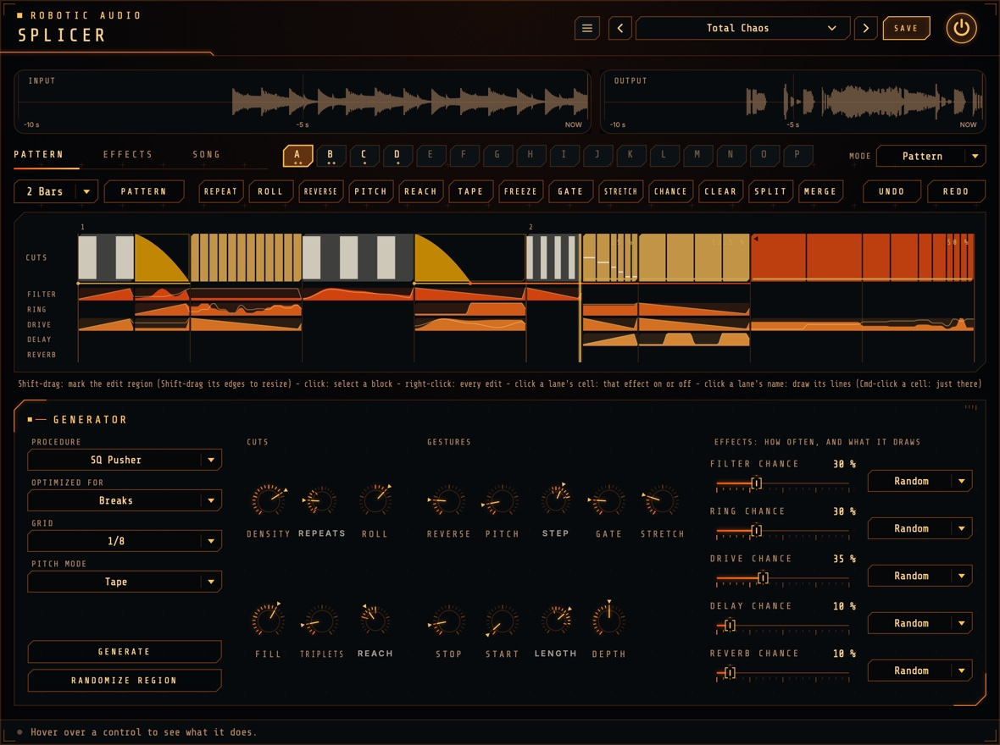
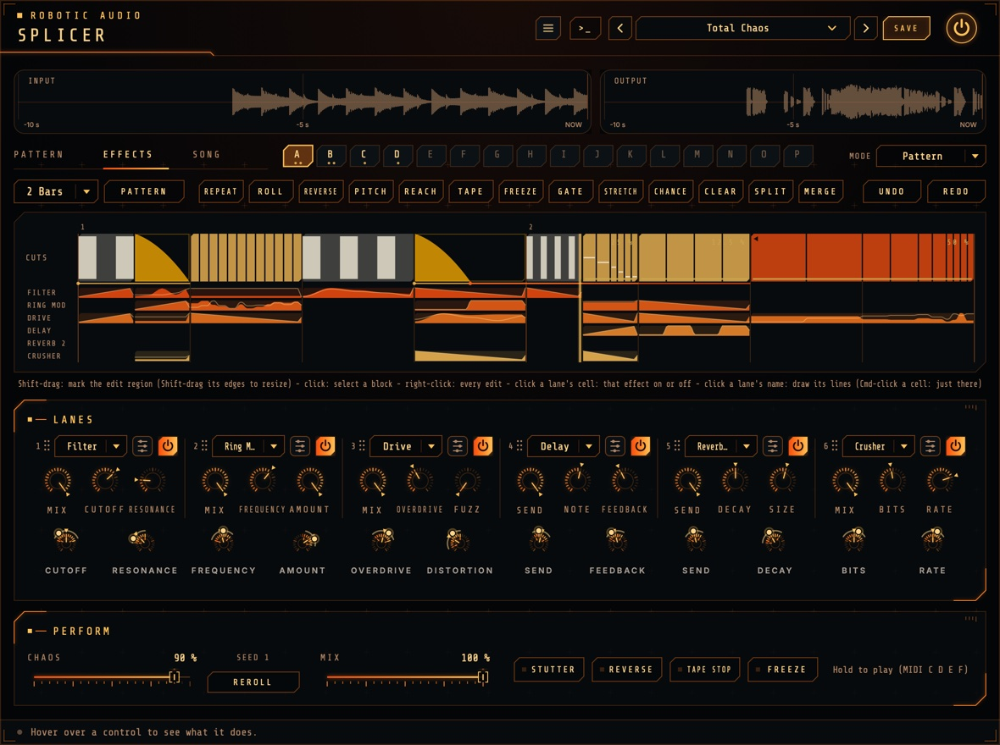
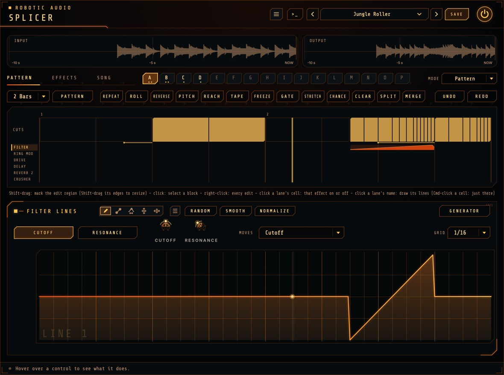
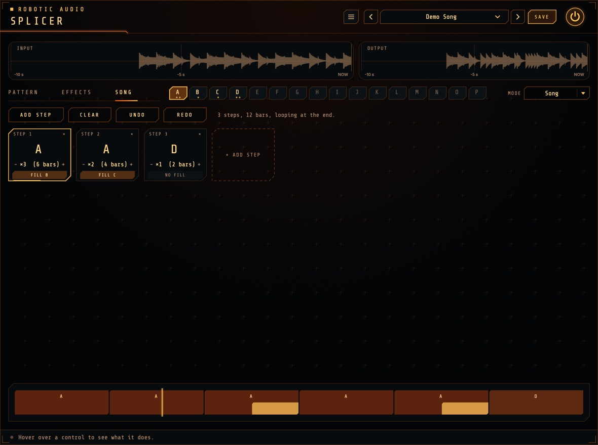

Splicer
A probabilistic cut-and-effects machine. Splicer slices whatever passes through it in time with your song, then repeats, reverses, re-pitches, time-stretches, gates, tape-stops and reorders the slices, and throws filters, ring modulation, drive and bitcrushing, echoes and reverb at them, each moving along a line you can draw. You design the cuts as patterns, or let the generator write them by chance inside bounds you set, then string patterns together into a song.
- BBCut-style cut engine
- 5 cut procedures on a strict grid
- Time stretch down to 0.78 %
- 6 effect lanes, any of the suite's effects in each, with drawn lines
- Repeatable randomness
- 16 editable patterns and a song chain
- Hand-played gestures and MIDI
- Tempo synced
- AU · VST3 · Standalone

Quick start
From install to mangled breaks in a minute.
Insert it
Put Splicer on a drum loop, a bus or a whole mix and press play in your DAW. Splicer follows the song's tempo and position.
Watch the pattern
The pattern editor shows the pattern with a playhead running through it: pink for repeats, blue for reversed ones, amber ramps for tape stops and starts.
Generate
On the PATTERN page, choose a Procedure and set the Generator panel's knobs, then press GENERATE: the generator writes a new pattern into the selected slot. Press again for another.
Edit it
On the PATTERN page, Shift-drag to mark a region and add or clear gestures, or randomize just that part.
Make a song
Fill more slots, then chain them on the SONG page and set Mode to Song.
Play it by hand
Hold STUTTER, REVERSE, TAPE STOP or FREEZE, or play them from a MIDI keyboard.
The window
What's where.
- Header
- The preset bar, the power button (bypass) and the menu (three lines) with this manual, About and the website. With an AI key, a >_ beside the preset bar opens the designer. Until Splicer is licensed, a DEMO or TRIAL chip beside the menu opens the licence.
- Displays
- The last 10 seconds in (with markers where a cut reads from: RPT repeats, REV reversed, TAPE tape stops and starts, FRZ freeze, STR stretched) and out. They stay on every page.
- Pages, patterns, mode
- On every page, one row: the page tabs, the sixteen patterns A to P (click one to select it) and the MODE menu, Pattern or Song (see Modes).
- PATTERN page
- The selected pattern's editor, with the Generator panel below it: the pattern's recipe (how it's cut, which gestures, how often blocks are stretched and each effect is used), GENERATE and RANDOMIZE REGION. Click an effect's name in the editor and its lines take the panel's place. See Patterns, The generator and Drawing the lines.
- EFFECTS page
- The same pattern editor as on the PATTERN page (it edits the same pattern, toolbar and all), then the lanes' effect rack (each slot's effect, its window, power and Mix, in the chain's order, with its two line ranges under it) and Perform: Chaos, the seed, Mix and the gestures played by hand. Click a lane's name in the editor and its lines take the place of the rack and Perform; EFFECTS brings them back. See Effect lanes.
- SONG page
- The chain of patterns Song mode plays.
- Tooltip bar
- Along the bottom: point at any control to see what it does.
Signal flow
A recorder, a cut engine and a fixed chain of effects.
Everything that comes in is first written into a 30-second history. The cut engine then plays from it: while a block plays live it reads the sample that has just arrived, so nothing changes; during a cut it reads from wherever the plan says, forwards, backwards, faster, slower, stretched, or from further back in time. Every jump is crossfaded, so cuts don't click.
The engine's output runs through the effect lanes in the order their slots stand on the EFFECTS page: filter, ring modulator, drive, delay, reverb and crusher at first. Drag a slot by its grip to another place to change the order: a delay before the drive echoes the clean sound and drives the echoes, after it echoes the driven sound; a ring before the reverb rings into it, after it rings the whole tail. The pattern editor's rows follow the order, and presets and sessions keep it. A lane only does anything while it is on for the block playing; switching fades over a few milliseconds. What its lines move follows them (see Drawing the lines), read about every 0.7 ms. Delays and reverbs are throws: sound goes in while the lane is on, and the tails ring out across the blocks that follow.
Mix blends the dry input with all of this. The drive is oversampled, which delays the sound by a few samples; Splicer reports this to your host, which compensates for it.
Chance, seeds & repeatability
Random, but the same every time.
Chance works in two places. The generator uses it to write patterns: GENERATE (and RANDOMIZE on the PATTERN page) draws a fresh seed every time, so each press writes something new, inside the bounds of the pattern's recipe (the Generator panel). And a pattern's blocks can have a chance of happening each time round, drawn from the seed and the song position: play bar 17 twice and you hear the same thing twice, and a bounce matches what you heard.
- Seed
- Shown under Chaos: which way the blocks' chances fall. REROLL picks a new one at random. It's saved with your session and in presets, and can be automated. 1 – 9999
- Settings
- The generator draws its own random numbers for each decision, so changing one setting changes only what it controls: with the same seed, turning up Reverse makes more blocks reversed, but the cuts themselves stay where they were.
The generator
The engine: how the phrase is sliced.
- Recipes
- The Generator panel under the editor on the PATTERN page shows the selected pattern's recipe: each pattern keeps its own settings, so a breaks pattern and a sparse glitch pattern sit side by side. Select another pattern and the panel shows its recipe; turn a knob and it's that pattern's recipe now (undo brings back the old one). GENERATE writes the whole pattern from it, RANDOMIZE REGION only the edit region; each press draws a fresh seed.
- Procedure
- The rules for slicing the phrase into blocks and repeats (see Procedures).
- Optimized For
- Leans everything towards your material without changing how anything works. Breaks: tight 2.5 ms crossfades, busy cutting. Mix / Bus: longer blocks, fewer repeats, more delay and reverb throws, less ring modulation. Melodic: smooth 12 ms crossfades, longer blocks, more reverse, pitch, stretch, tape and reverb. Performance: few automatic cuts and effects, so you can play the gestures by hand.
- Grid
- The step the cutting patterns are made of. Every block starts on it: at 1/8 (the default) every cut falls on an 8th note. Reach and the hand-played stutter are counted in it too. 1/4, 1/8, 1/16
- Density
- How many blocks are cut; the rest play live. Where a block starts matters: the phrase's first beat nearly always comes through clean, bar downbeats are cut less, and cutting builds up through the last bar. 0 – 100 %
- Repeats
- A range knob: how many times a cut block is repeated, picked inside the range for every cut and moved to the nearest count that divides the block musically: 1, 2, 4, 8 or 16 (a block of three units: 1, 3, 6 or 12). The repeats share the block's length: at the default of 2, a quarter-note block plays an 8th note twice. 1 – 16
- Roll
- How often a cut becomes a roll: 8ths, then 16ths, then 32nds, each taking half of what's left (repeats of a block). Rolls happen mostly in the phrase's last bar. Negative values slow down instead (32nds to 8ths). −100 – +100 %
- Fill
- The chance a phrase ends with a fill: its last half or quarter bar becomes a roll (or now and then a tape stop), leading into the next phrase. 0 – 100 %
- Triplets
- The chance a cut divides into threes (3, 6 or 12 repeats) instead. Turn it to 0 for none. 0 – 100 %
- The lanes
- Under Effects: how often, and what it draws, a row per lane, named after its effect: its chance (the share of blocks on which the generator switches it on) and, beside it, its motion (what the generator draws into its lines over each of those blocks, from the table under Effect lanes); both are part of the pattern's recipe (see Effect lanes). The phrase's first beat rarely gets one. 0 – 100 %
- Reach
- A range knob: how far back, in beats, the repeats come from. At 0 a block repeats its own start: the first repeat is the live sound, the rest replay it. Further back plays music from earlier in the history, which reorders the song. 0 – 8 beats
Never ahead of time
Splicer has no latency, so it can only play what has already been heard. Where a cut would need audio from the future (a reversed repeat of a block that has only just begun, or a pitched-up repeat that would run past "now"), its source moves back in time just far enough. The result: a reversed block at Reach 0 plays the audio just before the block backwards.
Procedures
Five ways to slice a phrase, after Nick Collins's BBCut.
Each procedure cuts the phrase with patterns of eight grid units (a bar of 8ths at the default grid), chosen at random from its own set, so blocks always tile the bar and land on the beat.
| Procedure | Patterns (grid units) | Character |
|---|---|---|
| Break Roller | 3+3+2 (most often), 2+2+2+2, 4+2+2, 2+2+4, 4+4, 2+3+3 | Jungle's tresillo feel. |
| Warp | 4+4, 8 | Long blocks; rolls stretch across them. |
| SQ Pusher | 2+2+2+2, 1+1+2+2+2, 2+2+1+1+2, 1+1+1+1+2+2 | Frantic: cuts more often, with twice as many repeats. |
| Sparse Glitch | 8, 4+4 | Cuts rarely, about a third as often, but tape stops, starts and reverses are twice as likely. |
| Straight | 2+2+2+2 | Even, predictable blocks: stutters exactly on the beat. |
Melodic and Mix / Bus double every block's length (patterns of 16 units).
Gestures
What a cut block does.
A cut block is a tape stop, a tape start or (most often) a run of repeats. Repeats can also be reversed, pitched and stretched.
- Reverse
- The chance that a cut plays its repeats backwards. 0 – 100 %
- Pitch
- The chance that a cut's repeats step in pitch, each one by another Pitch Step: up for rising rolls, down for falling ones. The first repeat keeps the original pitch. Pitch changes with speed, like tape, from two octaves down to one up. 0 – 100 %
- Pitch Mode
- How the generator pitches a cut. Tape: pitch and speed together, like a tape played faster or slower (higher repeats read further along). Shift: the time stretch changes the pitch and the material keeps its timing, so every repeat replays the same slice, higher or lower: pitched rolls and risers. In the left column of the Generator panel. Tape, Shift
- Pitch Step
- A range knob: the semitones added per repeat, always whole semitones. −12 – +12 st
- Tape Stop
- The chance that a cut block slows down to a standstill instead of repeating, then stays silent until the next block. 0 – 100 %
- Tape Start
- The chance that a cut block starts from standstill and spins up to speed. 0 – 100 %
- Gate
- The chance that a cut block is a gate: played through, silenced for part of every 8th, 16th or 32nd (or their triplets, by the Triplets chance), never slower than the block, open a quarter, half or three quarters of each. 0 – 100 %
- Tape Length
- A range knob: how much of the block the stop or start takes, in quarters of the block. 10 – 100 %
- Stretch
- The chance that a cut's repeats are time-stretched (see Time stretch). 0 – 100 %
- Depth
- How far a stretch may go: each stretched cut picks 50 % or slower, down to this, every step as likely. 50 % – 0.78 %
Time stretch
Slower, at the same pitch.
Any live block or run of repeats can be stretched: its material goes by slower while keeping its pitch. A live block at 50 % plays the first half of itself over the whole block; a repeat at 25 % plays a quarter as much material, four times as long. Choose it with STRETCH on the PATTERN page (or Stretch in the right-click menu): Off, 50 %, 25 %, 12.5 %, 6.25 %, 3.13 %, 1.56 % or 0.78 % (128 times as long). From about 3 % down, a few milliseconds of sound are drawn out into a ringing, metallic drone. Tape stops, tape starts and freezes keep their own speed; gates stretch too. The generator stretches cuts by its Stretch and Depth (see Gestures).
The same engine pitches repeats in Shift mode (see Gestures): the material keeps its timing and only the pitch moves, which is what a pitched roll or riser wants.
Stretched sound is played as two overlapping 50 ms grains, each at the block's pitch, so pitch and time are separate: a stretched, pitched repeat steps in pitch without changing speed, and a stretched reversed repeat plays slowly backwards. Each new grain is lined up with the one it takes over from, so low notes and kick drums sustain smoothly instead of pulsing. Hits stay hits: Splicer marks every drum hit as it records, plays each one once, as it was, when the stretch reaches it, and lets the grains repeat only what follows it, so a kick stretched to 6.25 % sounds like one kick with a long tail, not a click train. A stretched block still starts sharply on its step, and like every cut it never needs audio from the future: slower only ever falls further behind.
Effect lanes
Six lanes, any of the suite's effects in each, switched on block by block, each following its lines.

The lanes are the slots of an effect rack, the same as in the suite's other plugins: each plays whichever effect you choose from its menu (Filter, Ring Mod, Drive, Delay, Reverb 2 and Crusher at first; any of the suite's effects, Event Horizon and Pump included). Where a lane plays is in the pattern: switch it on or off per block by clicking its row in the editor, or let the generator do it (the Generator panel's Effects: how often, and what it draws). How it moves is its two lines, drawn across the pattern, each moving one setting of its effect (see Drawing the lines). The EFFECTS page sets the rest:
- Effect menu
- The lane's effect, alphabetically. Another effect gives the lane's lines that effect's own starting settings to move (e.g. a delay's Send and Feedback); every effect keeps its own settings, so switching back finds them again.
- Edit
- The button beside the menu opens the effect's whole window over the page: its display and every control. What the lines don't move stays where you set it here. The square in front of its name switches the lane on and off (click it or the name), its own effect menu swaps the effect in place, EXPAND grows the window over the whole page for a big effect (Event Horizon; SHRINK back), and LINES shows the lane's lines in its place; EFFECT there comes back.
- Power
- Switches the lane on and off: on, it plays where the pattern switches it on; off, it's left out everywhere: its row in the pattern editor turns faint grey, the rings round its range knobs and the playhead over its lines stop, and it changes nothing in the sound. Every lane starts on; the switches (Lane 1 On … in your host) are saved with presets and sessions.
- Mix
- How much of the effect replaces the sound where the lane is on; for a delay or reverb (a throw, below), how much is sent into it. A line can move it too.
- Order
- Drag a slot by its grip (its number and dots) to another place: the sound runs through the lanes left to right, and the lane's cells, lines, ranges and what they move go with it in every pattern. See Signal flow.
- Range knobs
- Under each slot, one per line, named after what it moves: where the line takes it. The bottom of a line is the bottom of the range, its top the top; hovered, the knob shows the range in the setting's own units. Drag to move the range, Shift-drag (or Shift-scroll) to make it wider or narrower, double-click to reset. While a pattern plays, a thin ring round the knob shows the range its line takes it over, with a dot where the line has it right now; it only reaches the sound where the lane is on.
| Lane at first | Line 1 | Line 2 |
|---|---|---|
| Filter | Cutoff | Resonance |
| Ring Mod | Frequency (low: a tremolo-like flutter; high: metallic, bell-like, robotic) | Amount |
| Drive | Overdrive | Distortion |
| Delay (a throw) | Send | Feedback |
| Reverb 2 (a throw) | Send | Decay |
| Crusher | Bits | Rate |
| Motion (Generator panel) | What GENERATE draws over a block |
|---|---|
| Hold | One random level, held. |
| Ramp Up | From the bottom to the top: a rising filter sweep. |
| Ramp Down | From the top to the bottom. |
| Walk | A smooth random wander. |
| Steps | A new random level for every repeat. |
| Alternate | Flips between the bottom and the top with every repeat. |
| Random | One of the above, chosen anew for every block. |
Delays and reverbs (Delay, Reverb, Reverb 2, Event Horizon) are throws: the block's sound goes in, at the lane's Mix, while the lane is on, and the echoes and tail carry on over the blocks that follow, mixed on top of the sound. Every other effect plays only where its lane is on, fading in and out over a few milliseconds and starting afresh each time.
Drawing the lines
Every effect's movement, drawn across the pattern.

Each lane has two lines, running across the whole pattern under the blocks, each moving one setting of its effect. Where the lane is on, the line sets that setting inside its range; where it's off, the line does nothing. The generator draws the lines as it writes a pattern (each block's motion), and you can redraw any of it.
Click a lane's name in the pattern editor (FILTER, RING MOD …) and its lines open under it, lined up with the pattern above: on the PATTERN page in the Generator panel's place, on the EFFECTS page in place of the rack and Perform. Click the name again, CUTS, or the button at the top right (GENERATOR or EFFECTS) to go back.
Cmd-click an effect's cell to edit its lines over that block only: the block is selected, the lines zoom to it, and drawing, ready-made shapes and RANDOM change only that part (the note above the drawing says where, e.g. ONLY 2.3.1 – 2.4.4). Click the effect's name for the whole lines again.
- Tabs
- The lane's two lines, named after what they move (e.g. CUTOFF and RESONANCE): which line to draw. The other line shows faintly behind it, see-through, so you can draw one against the other.
- Drawing
- The suite's envelope editor: draw freehand, in lines, or warp, lift and move the shape with the tools; RANDOM, SMOOTH and NORMALIZE; right-click (or the menu button) for ready-made shapes, waveforms and windows; Shift-drag to edit only part of it. A playhead runs through it while the pattern plays.
- Grid
- The note value the drawing snaps to and shows: 1/4, 1/8, 1/16 (the pattern's steps, the default), 1/32, or the triplets 1/4T to 1/32T.
- Effect menu
- At the left, under the title: the lane's effect, swapped in place; the lines stay, moving the new effect's settings (its own starting ones where it lacks theirs).
- Effect
- At the top right, beside GENERATOR or EFFECTS: the lane's effect window in place of its lines (on the PATTERN page it switches to the EFFECTS page); LINES there comes back.
- Moves
- What the selected line moves: any of the lane's effect's settings, or its Mix (a throw's Send). The tab, the range knob and the drawing take its name.
- Power, ranges
- The same as on the EFFECTS page. What GENERATE draws into the lines is the lane's motion, in the Generator panel.
The lines belong to the pattern: select another pattern and you see its lines, and drawing is an edit of the pattern like any other, undone with Cmd+Z on the PATTERN page. Copy and paste, Randomize and changing the pattern's length take the lines along with the blocks; GENERATE draws them anew.
Modes
What plays.
The MODE menu, at the right of the page tabs, decides which pattern the cut engine plays. Everything after that (the history, the gestures you play by hand, the effect lanes' power and ranges, Chaos and Mix) works the same in both modes.
| Mode | What plays |
|---|---|
| Pattern | The selected pattern loops, in step with the song. Choosing another pattern (on the PATTERN page, by automating the Pattern parameter, or with a MIDI note from C1 to D#2) switches at the next bar line. |
| Song | The chain on the SONG page plays from the song's start, looping at its end. |
Both follow the song position, so playing a section again or bouncing it gives the same result. Chaos scales the blocks' chances: at 50 % they're as set; turn it down and fewer blocks happen.
Patterns
Cuts you design, keep and play.
The PATTERN page edits sixteen patterns, A to P. A pattern is 1, 2 or 4 bars of blocks on a grid of 16th notes: each block plays live or is cut, may be stretched, may switch effects on, and has a chance of happening. Each pattern also has its own lines for the effects. Click a slot to edit it (in Pattern mode it also starts playing at the next bar line); slots holding something show a dot per bar.
Selecting
As in the envelope editor, Shift-drag across the timeline to mark the edit region; it snaps to the Grid (1/8 by default). With Shift held, drag either edge of the region to resize it. A plain click selects the block under the mouse, Cmd+A selects everything and Esc selects nothing.
Edits
| Edit | What it does to the selection |
|---|---|
| Repeat | Plays it as 1, 2, 3, 4, 6, 8 or 16 equal repeats: two repeats over a quarter note are two 8ths. |
| Roll | A roll: 8ths, then 16ths, then 32nds, each taking half of what's left (or slowing down; or in triplets). A Riser climbs a semitone each repeat as it speeds up, a Faller drops as it slows: both shifted, so every repeat replays the same slice. |
| Reverse | Plays its repeats backwards (a live block becomes one reversed repeat). Again to turn it off. |
| Pitch | Each repeat a step higher or lower: ±1, 2, 3, 5, 7 or 12 semitones; Tape (pitch and speed together) or Shift (pitch only, through the time stretch: the timing stays). |
| Reach | Takes the repeats from an 8th, a beat, two beats or a bar further back: reorders the music. |
| Tape | A tape stop or start, over the whole block or its first quarter, half or three quarters. |
| Freeze | Holds a 1/32 note from just before the selection as a sustained tone. |
| Gate | The sound plays through, silenced for part of every note value you pick: every 1/4, 1/8, 1/8T, 1/16, 1/16T, 1/32, 1/32T or 1/64, open for 25, 50 or 75 % of each (1 ms edges, so it doesn't click). Can be stretched too. |
| Stretch | Plays its live blocks, repeats and gates slower at their own pitch: 50 % down to 0.78 %, or Off (see Time stretch). |
| Chance | How often its blocks (and their effects) happen: 100, 75, 50 or 25 %. Drawn from the seed and the pass, so repeatable; Reroll changes the outcome. |
| Clear | Back to live, unstretched, effects off (Delete). |
| Randomize | The generator fills only the edit region (or, with nothing marked, the whole pattern) using the pattern's recipe, with a fresh seed each time. |
| Split / Merge | Cuts blocks at the selection's edges, or joins the selection into one block. |
| Copy / Paste | Cmd+C and Cmd+V (pastes at the selection's start, between patterns too). |
| Undo / Redo | Cmd+Z and Cmd+Shift+Z, 100 steps, patterns and chain alike. |
Every edit is in the toolbar and in the right-click menu. Click a cell in an effect's row to switch that effect on or off for the block under it (or for the whole selection, if you click inside it); Lanes in the right-click menu does it for the selection or a whole row. Each row shows the effect's first line through the blocks it's on for, and its second as a faint line over it. Click an effect's name to draw its lines. Editing one region never changes anything anywhere else; only the blocks' chances fall anew on each pass.
Generate, length and files
- Generate
- The generator writes a whole new pattern into the slot (as long as it is), from the Generator panel's settings (the pattern's recipe), with a fresh seed each press: the cutting rules (strict grid, a clean first beat, fills at the end) all apply. It draws the effects' lines anew. Not what you wanted? Press again, or undo.
- Length
- 1, 2 or 4 bars. New bars play live; bars past the new end are dropped.
- Pattern menu
- Save or load the pattern, copy, paste or clear it; save or load the whole bank (all sixteen patterns and the chain); load the demo bank; open the Patterns folder. Files go to a Patterns folder next to your presets.
Song
Patterns strung together into a performance.
The SONG page holds the chain that Song mode plays: a row of steps, each a pattern played a number of times, optionally ending with a fill.
- Pattern
- Click the big letter to choose the step's pattern.
- Repeats
- − and + set how many times it plays (1 to 32); the tile shows how many bars that is.
- Fill
- Click to choose a pattern that replaces the end of the step's last pass: a one-bar fill pattern plays over its last bar. Longer fills play their last bars.
- Step menu
- Click the tile (or right-click) to insert a step before it, duplicate, move it left or right, or delete it; the cross deletes too.
- Add Step
- Puts the pattern being edited at the end.

Underneath, the timeline shows the whole song in proportion, every pass of every step with the fills at their ends, and a playhead. The chain follows the song position from bar 1 and loops at its end, so a 12-bar chain plays bars 1-12, then again from bar 13.
Perform
Chaos, the seed, Mix and the buttons, along the bottom of the EFFECTS page.
- Chaos
- Scales the blocks' chances as they play (and, when generating, every chance and range width). At 50 % everything is as set; lower, fewer blocks happen; at 100 % every chance is doubled. 0 – 100 %
- Reroll
- A new seed: the blocks' chances fall another way.
- Stutter
- While held, repeats one grid unit from the moment you pressed.
- Reverse
- While held, plays the history backwards from the moment you pressed.
- Tape Stop
- While held, slows to a standstill (in just over a beat) and stays silent.
- Freeze
- While held, loops the last 1/32 note (at least 30 ms) with long crossfades: a sustained, frozen tone.
- Mix
- The dry input against Splicer's output. 0 – 100 %
Hand-played gestures take over from the plan while held (the newest press wins) and crossfade back on release; the effect lanes keep following the plan. The buttons are host parameters: automate them to place gestures exactly. Like all momentary buttons in the suite, they're never stored in presets or sessions.
MIDI
Choose patterns and play the gestures from a keyboard or pads.
Send MIDI to Splicer (in most DAWs: route a MIDI track to it, or load it as a MIDI-controlled effect).
| Notes | What they do | Velocity |
|---|---|---|
| C1 – D#2 (36 – 51) | Choose patterns A – P. In Pattern mode the new one starts at the next bar line. | |
| C (any other octave) | Stutter, while held | Soft: two grid units · medium: one · hard: half a unit |
| D | Reverse, while held | Above 100: double speed, an octave up |
| E | Tape Stop, while held | Harder stops faster: from two beats down to a quarter of a beat |
| F | Freeze, while held |
Notes are sample-accurate. In the standalone app, the keyboard strip under the window plays them too.
The display
Seeing the chaos.
The pattern editor, on the PATTERN and EFFECTS pages alike, shows the selected pattern numbered by bar, with a line per beat and a playhead running through it while it plays. In the CUTS row, outlined blocks play live; filled ones are cut: pink for repeats (with a line between repeats), blue with a back arrow for reversed repeats, amber ramps for tape stops and starts, a gold line along the bottom (and the speed at the top right) for stretched blocks. A small staircase shows pitched repeats, and a line running left from under a block shows how far back its repeats are taken from.
Below, a row per effect lane shows the blocks the effect is on for, with its first control's line (cutoff, bits, drive, send) filled in and its second as a faint line over it.
The map always shows exactly what plays this time round (blocks whose chance didn't come up show as live), and it updates the moment you edit or change a setting.
Presets & bypass
The header every Robotic Audio plugin shares.
- Preset bar
- Previous, next, the preset list (with Save As, Delete and Open Folder) and SAVE. Presets store every setting, the seed, the mode, the sixteen patterns (their lines included) and the chain.
- Factory presets
- Default, Jungle Roller, SQ Fill Frenzy, Tape Ghost, Bus Throws, Lo-Fi Stutter, Melodic Smear, Stretch Lab, Hands On, Demo Song (Song mode, playing the demo bank's chain) and Total Chaos. Each brings its own patterns: two grooves (A, B) and two fills (C, D), chained.
- Song presets
- Fifty more, in Song mode, in eight folders of the preset list: Techno & House, Breaks & Jungle, Hip-Hop & Lo-Fi, IDM & Glitch, Builds & Drops, Dub & Throws, Vocal & FX and Ambient & Melodic. Each is a whole arrangement: its own patterns chained into a song, with the effect lanes' effects, ranges and lines set for it, from Amen Architect and Tape Stop Drop to Dub Siren Throws and Glass Cathedral. Play your loop through one and let it run, or switch to Pattern mode to play its patterns by hand.
- Power
- Bypasses the plugin with a short, click-free crossfade.
- >_ and AI...
- The designer and its keys: see Designing with Claude.
Designing with Claude
Describe a sound; Claude sets Splicer to make it.
With your own Anthropic key, the >_ beside the presets opens a designer: describe what you want in your own words, such as "busier stutters with more pitched repeats and short delay throws", and Claude sets every control you could automate (the patterns you've drawn stay yours). It is told what every part does and how it is set now, so it can design from scratch or change only what you ask for.
- Keys
- Menu (three lines) > AI...: an Anthropic key for Claude. They are your own, shared by every Robotic Audio plugin and kept on this computer, never in sessions or presets; each design uses your credits with the service. Without a key nothing of this shows.
- >_
- Left of the preset bar, while a key works: opens the designer over the window. Type a description and press Return (or EXECUTE); ESC closes it, and what is running carries on.
- NEW SOUND / EDIT THIS
- NEW SOUND designs a new patch from your words; EDIT THIS changes the patch as it is, as you ask ("brighter", "less", "more subtle"), keeping the rest.
- REVERT
- Puts the patch back as it was before Claude's last design.
- SAVE AS PRESET
- Keeps the design as one of your presets, named after your words.
- The log
- What Claude made, and what it changed, part by part.
Ideas
Things to try.
Break Roller on a break at 170 BPM, Roll at 60 %, Fill at 80 %, Reach 0 to 2 beats: instant jungle edits with a roll into every phrase.
Automate the seed: one value per chorus, another per verse. Each section gets its own pattern.
Mix / Bus on the master with Density at 0; automate Density up for the last bar before a drop.
Delay chance high, Send range 60 – 100 %, Feedback around 70 %, motion Hold: echoes thrown from random blocks. Then draw a spike into the Send line where you want a big one.
Melodic, Sparse Glitch, Tape Stop, Reverse and Stretch up, Depth 6.25 %, Reverb chance 40 %: slowly falling, smeared, swelling textures.
A 4-bar pattern, the filter on everywhere (Lanes in the right-click menu), one long curve drawn into its Cutoff line: a filter move across the whole pattern.
Gate the last bar: the first two beats every 1/8, then every 1/16, then 1/32: the chop speeds up into the drop.
A single snare hit, STRETCH at 0.78 %: a few milliseconds become a long, ringing, metallic drone. Add the reverb lane.
Mark the last bar, ROLL → Riser: a roll that speeds up and climbs a semitone each repeat, replaying one slice. Add the filter opening up.
Performance, with C, D, E and F on pads: stutters, reverses, stops and freezes, by hand.
Licence
Try it, activate it, move it to another computer.
Without a licence, Splicer runs as a demo: the sound drops out for 3 seconds every 45 seconds. Everything else works, saving included, so you can try it properly and keep what you made when you buy it. While it isn't licensed, the header shows DEMO (or TRIAL with the days left); click it, or choose Licence... in the menu, for the licence panel. It also opens by itself when the window opens in demo.
- ACTIVATE
- Opens the shop in your browser. Sign in, choose your licence for this computer, and Splicer unlocks a few seconds later.
- START TRIAL
- Everything, free, for 14 days, once per computer. The header counts the days down. Activate a licence at any time; your sounds and sessions stay as they are.
- BUY
- The plugin's page on roboticaudio.com, with its Buy button.
- SAVE DEVICE FILE / LOAD LICENCE FILE
- For a computer without the internet. Save the device file, take it to the shop's activation page on a computer that is online, and load the licence file it gives you back.
- DEACTIVATE
- Frees this computer's seat, so you can activate the licence on another one. CHECK NOW confirms the licence with the shop straight away.
Specifications
The numbers.
| Property | Value |
|---|---|
| History | 30 seconds, stereo |
| Generator | Patterns of 1, 2 or 4 bars (4/4) on a grid of 1/4, 1/8 or 1/16 |
| Repeats | 1, 2, 4, 8, 16 (triplets 3, 6, 12) per block; rolls up to 32; none shorter than a 1/64 note |
| Crossfades | 2.5 – 12 ms by material, on every jump |
| Pitch | −24 to +12 semitones; Tape (varispeed) or Shift (through the time stretch, keeping the timing) |
| Gate | Every 1/4 to 1/64 (with triplets), open 25, 50 or 75 %, 1 ms edges |
| Time stretch | 50 % down to 0.78 % (2 to 128 times as long); two lined-up 50 ms grains, hits kept intact |
| Effect lanes | 6, an effect rack's slots (any of the suite's effects), two lines each per pattern (257 points across it), read every 32 samples |
| Latency | A few samples (the drive's 4× oversampling), reported to the host |
| Tail | Up to 14 seconds (delay and reverb) |
| CPU at rest | Rests once silence has come in for longer than a cut can reach back and the tails have died away |
| Patterns | 16 per bank, 1, 2 or 4 bars on a 16th-note grid, up to 64 blocks each; a chain of up to 64 steps |
| Formats | AU, VST3, Standalone; takes MIDI |
| Licence | Activation in the browser or with a licence file; 14-day trial; a demo without either |